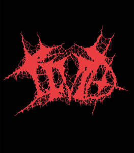

Trade Mark Journal No.2026/010 6 March 2026
UK00004344660 24 February 2026 (9,25,41)

- Class 9
- Point Of Sale [POS] systems; Step up transformers; Books recorded on disc; Books recorded on tape; System on a Chip [SoC]; System on Chip [SOC]; Music recordings; Music headphones; Music cassettes; Music software; Music tapes; Downloadable music sound recordings; Prerecorded music videos; Digital music players; Tape recordings of music; Pre-recorded CDs featuring music; Downloadable digital music; Audio tapes featuring music; Electronic sheet music, downloadable; Portable music players; Musical video recordings; Phonograph records featuring music; Prerecorded music audio tapes; Downloadable video recordings featuring music; Downloadable music files; Pre-recorded audio cassettes featuring music; Downloadable musical sound recordings; Digital music downloadable from the Internet; Musical recordings; Musical sound recordings; Pre-recorded DVDs featuring music; Prerecorded video cassettes featuring music; Prerecorded audio tapes featuring music; Docking stations for digital music players; Prerecorded video tapes featuring music; Pre-recorded video tapes featuring music; Computer software for creating and editing music and sounds; Optical discs featuring music; Pre-recorded laser discs featuring music; Series of musical sound recordings; Musical cassettes.
- Class 25
- Sports [Boots for -]; Plus fours; Peaked caps; Jerseys [clothing]; Wristbands [clothing]; T-shirts; Clothing; Knitwear [clothing]; Jackets [clothing]; Ready-to-wear clothing; Headbands [clothing]; Headbands for clothing; Woolen clothing; Layettes [clothing]; Clothing layettes; Parts of clothing, footwear and headgear; Jackets (Stuff -) [clothing]; Stuff jackets [clothing]; Paper hats for use as clothing items; Aprons [clothing]; Denims [clothing]; Embroidered clothing; Cashmere clothing; Jackets being sports clothing; Garments for protecting clothing; Ready-made clothing; Shorts [clothing]; Plush clothing; Kerchiefs [clothing]; Clothing for sports; Sports clothing; Visors [clothing]; Knitted clothing; Gloves [clothing]; Gloves as clothing; Leather clothing; Clothing of leather; Leather (Clothing of -); Linen clothing; Capes (clothing); Collars [clothing]; Belts [clothing]; Belts for clothing; Articles of clothing; Silk clothing; Gabardines [clothing]; Leisure clothing; Trunks being clothing; Foulards [clothing articles]; Corsets [clothing, foundation garments]; Athletic clothing; Drawers [clothing]; Drawers as clothing; Casual clothing; Playsuits [clothing]; Party hats [clothing]; Woven clothing; Tops [clothing]; Clothing for leisure wear; Mufflers [clothing]; Infant clothing; Clothes; Hoods [clothing]; Clothing for children; Fabric belts [clothing]; Bottoms [clothing]; Veils [clothing]; Pockets for clothing; Mitts [clothing]; Windproof clothing; Boas [clothing]; Slips [clothing].
- Class 41
- Educating at senior high schools; Teaching at junior high schools; Teaching at elementary schools; Educating at universities or colleges; Officiating at sports contests; Educating at university or colleges; Tutoring at cram schools; Music concerts; Recording of music; Music recording; Music publishing and music recording services; Music performances; Jazz music entertainment services; Production of music concerts; Music education; Presentation of music concerts; Live music concerts; Pop music concerts (Organisation of -); Performance of music; Production of music; Music production; Music concert services; Teaching of music; Music publishing; Publishing of music; Performance of music and singing; Tuition in music; Organisation of music concerts; Production of sound and music recordings; Music festival services; Instruction in music; Music instruction; Performing of music and singing; Performance of dance, music and drama; Live music performances; Music entertainment services; Publication of music; Arranging of music performances; Music composition services; Direction of music performances; Organising of festivals relating to jazz music; Composition of music for others; Music composition for others; Music recording studio services; Live music services; Rental of phonographic and music recordings; Music mixing services; Production of music shows; Live music shows; Arranging of music shows; Artistic management of music venues; Music cassettes (Rental of -); Tuition in music appreciation; Music library services; Music group services; Music performance services; Music production services; Publication of sheet music; Music publishing services; Provision of live music; Music transcription for others; Musical concerts by radio; Musical entertainment; Arranging and conducting of music concerts; Music competition services; Live musical concerts; Publication of music books; Providing digital music from the internet; Music transcription services; Entertainment in the nature of live performances by musical bands; Presentation of musical concerts; Musical concerts by television; Education and training in the field of music and entertainment; Selection and compilation of pre-recorded music for broadcasting by others; Sound recording and video entertainment services; Entertainment in the form of recorded music (Services providing -); Musical concert services; Arranging of musical entertainment; Entertainment in the nature of dance performances; Production of musical recordings; Entertainment in the nature of live dance performances.
DAVID HAWKINS
Cailyn Mae-Hope Hawkins